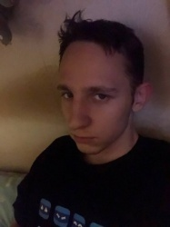

Обо мне
Меня зовут Паша, интересуюсь программированием и ремонтом техники. Музыкант, 3д художник и просто творческая личность.

Контакты
telegramm: asakrem
vk: nolol1
номер телефона: +79814550526
назад в главную